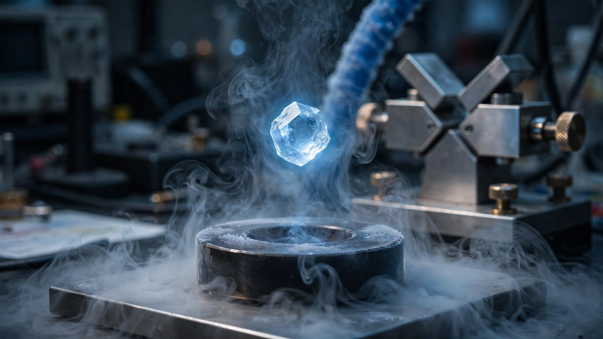

A Physicist Broke His Own 30-Year-Old Superconductivity Record. The Method He Used Changes Everything.
Ching-Wu Chu pushed ambient-pressure superconductivity from 133K to 151K using a pressure-quench protocol that treats crystal lattices like blacksmith steel. The 43-kelvin gap between the new record and mechanical refrigeration territory is now the most consequential number in materials science.

Thirty years. That is how long the ambient-pressure superconductivity record stood at 133 kelvin, set in 1993 by a mercury-based cuprate in a laboratory at the University of Houston. Paul Ching-Wu Chu set it. Now, at 83, he has broken it himself.
On March 9, 2026, Chu and research assistant professor Liangzi Deng published in PNAS that they had pushed the same material, HgBa2Ca2Cu3O8+δ, to a transition temperature of 151 kelvin at ambient pressure, an 18-kelvin jump representing a 13.5 percent increase over the previous record, confirmed by synchrotron X-ray diffraction at Argonne National Laboratory and supported by phonon and electronic structure calculations that rule out measurement artifacts. Understanding why this matters requires understanding a single number that barely appears in their paper. Forty-three.
A Sprint That Hit a Wall
Heike Kamerlingh Onnes found superconductivity in mercury at 4.2K in 1911, and progress crept for decades afterward. Sixty-two years of incremental work pushed the record to 23K in niobium-germanium by 1973. Then cuprates arrived: Georg Bednorz and Karl Alex Muller shattered the ceiling in 1986 with a lanthanum cuprate at 35K, and within months Chu's group at Houston discovered that swapping lanthanum for yttrium produced YBCO, which went superconducting at 93K. Why did that number matter so much? Liquid nitrogen boils at 77K. Suddenly you could cool a superconductor with a substance cheaper than milk.
Six years later, Chu's team hit 133K with Hg-1223. Then stasis for three agonizing decades. Researchers achieved extraordinary results under extreme pressure during those years, squeezing hydrogen sulfide to 203K at 150 gigapascals in 2015 and claiming carbonaceous sulfur hydride reached 288K at 267 gigapascals in 2020, but none of those states survived decompression, because the crystal structures that enabled superconductivity collapsed back to their ambient-pressure configurations the moment the diamond anvil cells were opened, making the results scientifically fascinating and practically useless.
Quenching a Crystal
Chu and Deng borrowed from metallurgy. Steel gets hard when a blacksmith heats it and plunges it into cold water fast enough that atoms cannot rearrange. Slow cooling yields soft iron; quenching locks in a metastable crystal structure that is harder, stronger, and permanently different from the equilibrium state because atoms simply do not have time to find their lowest-energy arrangement before the kinetic window slams shut.
Chu and Deng applied the same idea with a different lever. Squeeze Hg-1223 to between 10 and 30 gigapascals inside a diamond anvil cell, roughly 100,000 to 300,000 times atmospheric pressure, cool the compressed sample to 4 kelvin, and then release the pressure as fast as mechanically possible before the crystal lattice has time to relax back to its ambient-pressure configuration, trapping the high-pressure superconducting phase at normal conditions the way a quenched blade traps martensite.
"When you withdraw the pressure at such a high speed, everything flies apart," Chu told Science News. Diamonds crack, contacts sever, and measurements are ruined, which is why most attempts fail. When they succeed, what remains is a superconductor operating 18 kelvin warmer than anything previously demonstrated at ambient pressure.
Why 43 Is Everything
Nobody is running this calculation, but dry ice sublimes at 194.7K, and mechanical refrigeration, the technology inside every commercial freezer and industrial chiller on Earth, reaches that temperature with off-the-shelf compressor systems costing a few thousand dollars. Gap between Chu's new record and that threshold: 43.7 kelvin.
It defines everything about when this technology becomes economically viable.
Cooling a superconductor today means choosing among cryogens whose costs span four orders of magnitude, from liquid helium at $15 to $68 per liter, the higher end hitting Australian universities during recent shortages according to Physics Today, down to liquid nitrogen at $0.10 to $0.50 per liter in bulk, a ratio of 30-to-1 at best and 680-to-1 at worst:
| Temperature Range | Coolant Required | Cost per Liter/kg | Annual Cost (Typical) |
|---|---|---|---|
| Below 4.2K | Liquid helium | $15 – $68 | $25,000 – $85,000 |
| 4.2K – 77K | LHe or cryocooler | $15 – $68 or electricity | $10,000 – $50,000 |
| 77K – 194K | Liquid nitrogen | $0.10 – $0.50 | $170 – $850 |
| Above 194K | Mechanical refrigeration | Electricity only | $500 – $2,000 |
At 133K and 151K alike, liquid nitrogen works, so there is no change in coolant category yet. But cross 194.7K at ambient pressure and superconducting cables need nothing more exotic than commercial freezer units: no cryogenic infrastructure, no specialized gas handling, no supply chain vulnerable to helium shortages that have plagued research institutions worldwide since 2022. Cooling cost drops from thousands per year to hundreds. Deployment barrier collapses from specialized engineering to commodity equipment.
Grid Math
Chu frames it simply. "Transmitting electricity in the grid loses about 8% of the electricity," he told the University of Houston press office. "If we conserve that energy, that's billions of dollars of savings."
Run the numbers. U.S. Energy Information Administration data shows annual transmission and distribution losses averaged about 5 percent of electricity transmitted in the United States from 2018 through 2022. Apply that to EIA's 2025 generation figure of approximately 4,200 terawatt-hours: 5 percent equals 210 terawatt-hours per year, worth roughly $25.2 billion at the average U.S. retail price of $0.12 per kilowatt-hour. Globally, the International Energy Agency reports about 29,000 terawatt-hours generated annually with average transmission losses around 8 percent in developing regions, yielding worldwide T&D losses of roughly 2,300 terawatt-hours per year, valued at $115 billion to $230 billion depending on regional electricity pricing.
Superconducting cables would eliminate resistive losses, though not all T&D losses are resistive since transformer core losses, corona discharge, and dielectric heating persist regardless of conductor material. Attribute 60 to 70 percent of T&D losses to resistance, a conservative estimate drawn from power engineering literature, and recoverable U.S. savings land at $15 billion to $18 billion per year, with global savings of $70 billion to $160 billion annually. Numbers that make superconducting grid infrastructure arguably the single highest-value application of the technology, provided cables can be manufactured and cooled at competitive cost.
That proviso is doing heavy lifting.
Three Days Is Not Enough
Buried in Physics World's coverage is a detail that deserves more prominence. Pressure-quenched Hg-1223 remains superconducting for around three days at 77K. Above 200K it degrades as atoms frozen in their high-pressure configuration gradually relax to equilibrium and the enhanced Tc fades.
An eternity for a physics experiment but nothing for a power grid.
Practical applications require solving this stability problem: finding compositions whose metastable phases resist relaxation, developing methods to re-quench material in situ, or discovering entirely new approaches to ambient-condition stabilization of high-pressure crystal structures. A companion PNAS perspective paper outlines six pathways, including chemical substitution to lock in the quenched phase and machine-learning-guided materials searches. None of these pathways has been demonstrated yet, and all remain speculative.
Limitations
Several assumptions here require explicit acknowledgment. Grid savings calculations use EIA's aggregate T&D loss figure, which bundles non-resistive losses that superconductors cannot eliminate; attributing 60 to 70 percent of losses to resistance follows power engineering literature, not measured values for U.S. infrastructure specifically. MRI cost comparisons assume current helium pricing shaped by the 2022-2023 shortage; stable supply from new facilities in Qatar and Russia could moderate costs substantially. Coolant pricing reflects bulk institutional rates; individual laboratory or hospital costs vary widely by location, contract, and volume.
Most critically, pressure-quench protocols have been demonstrated on microgram-scale samples inside diamond anvil cells. Scaling from micrograms to the tons of superconducting material needed for grid cables or MRI magnets is not incremental engineering; it is a transformation of kind, and no cuprate superconductor has ever been manufactured at scale for high-current applications comparable to NbTi or Nb3Sn production lines. A materials science achievement, not an engineering one.
What This Means
Ching-Wu Chu has now set the ambient-pressure superconductivity record twice, 33 years apart, using the same base material. Room temperature remains far away: 149 kelvin separate this record from 300K, roughly the same distance the entire field has covered since 1911. But pressure quenching is genuinely new as an approach to ambient-pressure records, opening a research direction that did not exist before March 2026.
Here is what to do with this information. If you work in cryogenics or superconductor engineering, track the gap to 194.7K. Once a stable ambient-pressure superconductor crosses the dry ice sublimation threshold, infrastructure cost for deployment drops by an order of magnitude. At 151K the gap is 43.7 kelvin; at 133K it was 61.7. One paper closed 29 percent of that distance after three decades of stasis. Watch whether Chu's technique works on other cuprate compositions and whether metastable phases can be stabilized beyond three days. Watch for the six pathways in the companion perspective. If any succeeds, the question shifts from "is room-temperature superconductivity possible?" to "what does the cooling system cost?" Dollar signs. Industries move on dollar signs.